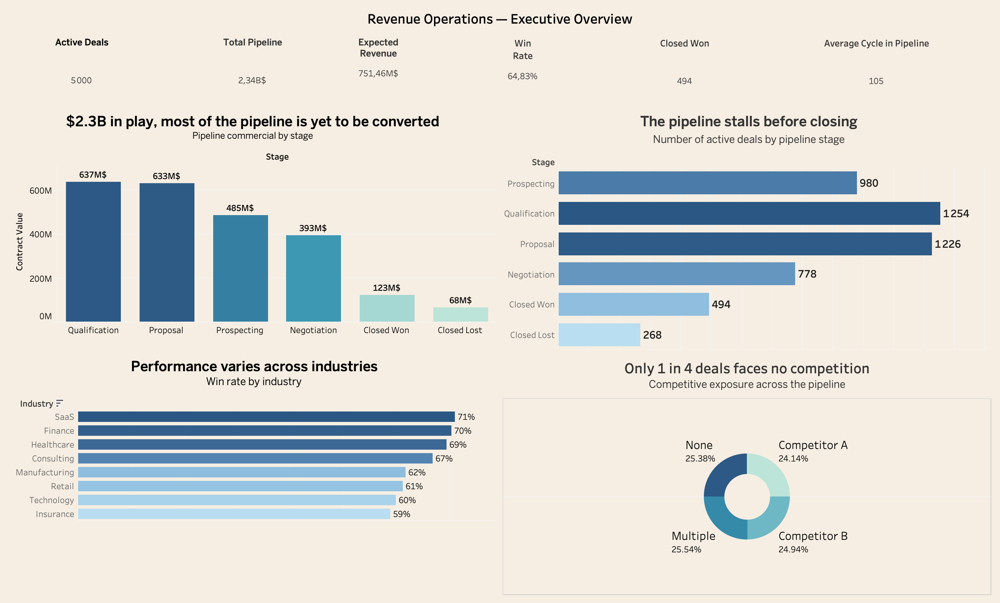
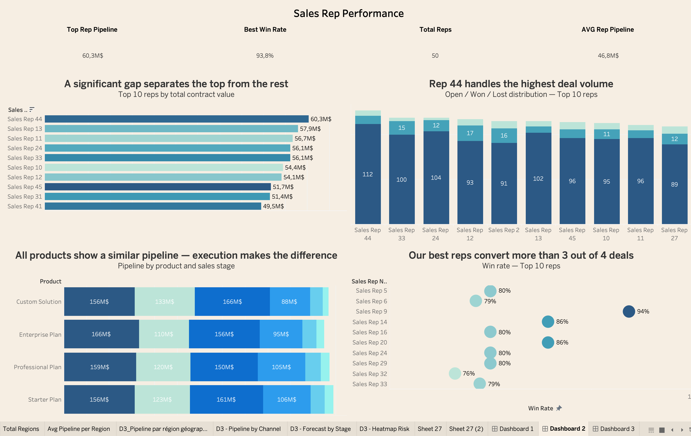

Démonstration end-to-end d'une chaîne analytique Revenue Operations complète : dataset synthétique Salesforce-like (5 000 deals · 21 colonnes · 24 mois), exploration Google Sheets, puis 3 dashboards Tableau de qualité exécutive.
Design system cohérent inspiré des standards SaaS (Salesforce, Snowflake, Stripe) — fond beige, palette bleue séquentielle, typographie hiérarchisée « insight first ».
Vue d'ensemble du pipeline commercial : $2.3B en jeu avec la majorité encore à convertir. Funnel qui rétrécit avant le closing, Win Rate par industrie (SaaS 71% en tête), exposition concurrentielle — 75% des deals face à au moins un concurrent.

Volume ≠ Performance : Rep 44 gère le plus gros pipeline ($60.3M) mais Rep 9 convertit 93.8% de ses deals. Les 10 meilleurs reps gèrent ~23% du pipeline total. Dot plot Win Rate pour identifier les profils à dupliquer.

Anomalie de forecasting détectée : 197 deals en Commit alors qu'ils sont encore en Prospecting. Pipeline régional équilibré ($459M–$480M), tous les canaux performent à un niveau similaire. 1 342 deals critiques (valeur >$400k · probabilité <30%) nécessitent une escalade.
Avant Tableau, Google Sheets a servi de couche d'exploration avec 7 onglets, des formules dynamiques reférençant les 5 000 lignes sources, et plusieurs TCD.
Au-delà des visualisations, les calculs métier développés dans Tableau attestent
d'un usage avancé — notamment les LOD expressions imbriquées
(FIXED dans FIXED), signature d'une maîtrise avancée de l'outil.
Dans mon alternance, je travaille quotidiennement sur des problématiques Revenue Operations et Sales Analytics avec Salesforce comme outil principal. Manipuler de la donnée commerciale, construire des rapports pipeline, suivre la performance des équipes Sales — c'est mon terrain de jeu professionnel.
Le problème : les données réelles de mon entreprise sont strictement confidentielles. Impossible de les exposer dans un portfolio public, même partiellement anonymisées.
La solution : dataset synthétique reproduisant fidèlement la structure d'un export Salesforce — 5 000 deals, 21 colonnes, données réalistes couvrant 24 mois d'activité commerciale, avec toute la complexité d'un pipeline B2B SaaS multi-régions.
Chaque analyse, chaque formule, chaque visualisation produite ici est directement transposable à un environnement professionnel réel.